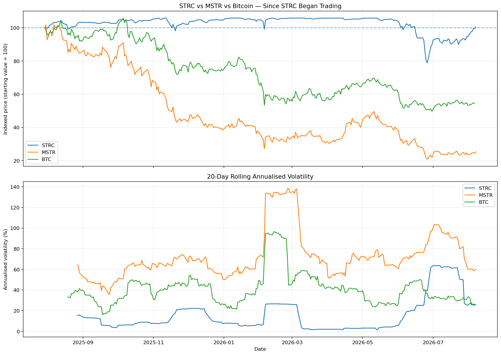

Why I Own Strategy Inc. (MSTR)
A story about Credit, Capital, and Equity.
Strategy is the worlds largest holder of Bitcoin outside of Satoshi Nakamoto and I am more bullish on MSTR than I am on Bitcoin. Here I will discuss why.
A public company can issue credit to acquire capital assets at scale with financial instruments that are impossible for individuals or private companies to issue. Strategy is not only a publicly traded company but it is a Well-Known Seasoned Issuer (WKSI). This has allowed Strategy to create Bitcoin backed credit instruments which enables them to offer highly volatile common equity that amplifies BTC price action.
In a previous article I have talked about why I think Bitcoin is the best form of capital. I've written about the properties of capital assets and what makes them valuable. I won't go into it here but the thesis behind Bitcoin is the core value of Strategy. If you don't like bitcoin, this probably isn't for you.
Strategy offers two main products, among other things. Their common equity (MSTR) and preferred stock (STRC). In the middle of this sits their capital (Bitcoin).
Strategy has found a way to issue highly desirable credit without creating outsized existential risk for the common equity holders of the company. How? Strategy listed a litany of preferred shares on the stock market. This has enabled them to raise cash from different types of investors with different duration, yield, and volatility preferences. Their most successful preferred is called Stretch (STRC). It aims for a trading price of around $100 and has a variable dividend to help keep it there. The cool thing about preferred shares is that when you sell them to the public, you never have to buy them back. You can issue as many as you like and as long as people want them, you have access to cash. How do you encourage people to someone buy them though? You pay them dividends for owning it. This is a form of credit. Though it comes in many forms, basically if you buy credit, you are paid to own it. In this particular form, the owner of the credit (the customer) does not have margin call rights so if the credit or backing capital asset falls in value, they cannot demand their money back. This is very different to borrowing money to buy bitcoin.
Strategy issues credit to buy capital on behalf of their common equity holders.
You can imagine buying credit like a reverse bank. When you use a credit card, you pay the bank to borrow money, conversely, if you buy credit, you are paid for allowing someone else to borrow your money. However, when buying credit in the form of a preferred share, you are not able to get your money back from the issuer, but you can sell it to other credit investors to cash back in.
Not to speak for Strategy but this is my best understanding of what Stretch is:
Aspirationally, STRC is an over collateralised, low volatility, variable dividend yielding, perpetual, preferred stock. That means it (aspirationally) has more capital backing it than it has credit issued, it trades between $95 and $100 per share, pays dividends forever, the dividend varies from month to month, and it's tradable on the stock exchange.
I vibe coded a script to show STRC's performance on staying within the desired trading range. Here are the results:
============================================================
STRC HISTORICAL CLOSING PRICE ANALYSIS
============================================================
Target range: $100 - $95 target range
Prices above $100 are included as within the target range.
DATA
------------------------------------------------------------
First trading day: 2025-07-30
Latest trading day: 2026-08-07
Total trading days: 258
$100 - $95 TARGET RANGE
------------------------------------------------------------
Days within $100 - $95 target range: 209 (81.01%)
Days outside $100 - $95 target range: 49 (18.99%)
PRICE EXTREMES
------------------------------------------------------------
Highest closing price: $100.07 on 2026-01-12
Lowest closing price: $74.57 on 2026-06-26
AVERAGES
------------------------------------------------------------
Average closing price: $96.87
Average distance from $100: $3.14
FIRST / LATEST CLOSE
------------------------------------------------------------
First close: $94.50 on 2025-07-30
Latest close: $95.01 on 2026-08-07
============================================================
According to this, you would have been able to buy and sell this instrument within a 5% volatility range over 80% of trading days. You can run this code yourself, I have uploaded it to my GitHub. Code.
The chart below (another product of that code) shows how Strategy has been able to strip the volatility off Bitcoin, through Stretch and pass it onto MSTR. The result? MSTR behaves like amplified Bitcoin.

Here's how I think about it: Volatility is like heat and heat is a form of energy. Because there is conservation of energy, if you move heat from one side of an adiabatic system (closed environment), that side will cool other will warm up. This is what Strategy has done with volatility, they have taken the Bitcoin volatility within the company, made a relatively stable credit instrument (STRC), and made their common equity (MSTR) more volatile as a result.
So for people who like highly volatile assets and believe Bitcoin will do well, MSTR is very useful. It's also very useful for people who don't like Bitcoin (shout out to the buttcoiners out there) because they can short MSTR.
Michael Saylor likes to call Bitcoin digital capital, Stretch digital credit and Strategy digital equity (the common stock).
So in short, digital capital and digital credit, is owned and sold respectively by digital equity.
I own some of the digital equity. I am not recommending you buy or sell it, I am just documenting my thought processes and investing journey. Not financial advice.
Things to note: 1. This is an extreme simplification of Strategy's business and could be inaccurate. 2. Stretch is only less than 1 year old. Who knows if it will succeed long term.